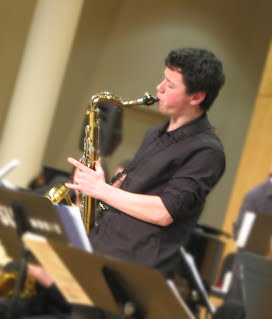

Max Roark is an undergraduate at
Berklee College of Music in Boston, MA. Previously, he was in the
Jazz Studies and Contemporary Media department at the
Eastman School of Music of the
University of Rochester, where he studied with
Charles Pillow. He is a graduate of
Lincoln High School in Portland, Oregon.
Max plays saxophone and doubles on clarinet and flute, as well as other woodwinds as needed. He played saxophone in several ensembles around Portland during high school, including tenor saxophone in the big band and small combo at Lincoln, and alto, tenor and (sometimes) baritone saxophone in the late Thara Memory's Pacific Crest Jazz Orchestra from 2013 to 2016. He also played woodwinds in the Lincoln concert band, and was a drum major in their marching band. Earlier, he played in a combo at the Alan Jones Academy of Music and in the Portland Youth Jazz Orchestra, as well as in the Metropolitan Youth Symphony's symphonic band. He has studied saxophone privately with Gary Harris and Dan Wilensky, and flute with Cheryl Alex.
Selected archival performance audio/video from recent years...
- Videos from various performances of Berklee ensembles:
- Audio from Jazz is Phish gig at the Nectar Lounge in Seattle, with Max on tenor along with Farnell Newton, Felix Pastorius, and Adam and Matthew Chase, April 14, 2017.
- AMP Pacific Crest Jazz Orchestra at Next Generation Jazz Festival, Monterey, CA, April 10, 2016. (band won the competition.)
- Interview and performance of band on Oregon Public Broadcasting's Think out Loud, July 3, 2015:
- AMP Pacific Crest Jazz Orchestra at Essentially Ellington Competition & Festival, Lincoln Center, NYC, May 8-9, 2015. (band won the competition.)
- AMP Pacific Crest Jazz Orchestra at Next Generation Jazz Festival, Monterey, CA, March 29, 2015 (Took 2nd place in division)
- AMP Pacific Crest Combo at Next Generation Jazz Festival, Monterey, CA, March 29, 2015. (combo won category)
- KMHD interview with Max and Colescott Rubin about Mingus Festival.
- AMP Pacific Crest Jazz Orchestra at Charles Mingus Festival at Manhattan School of Music, Feb. 15, 2015. (band won category)
- AMP Pacific Crest Combo on Portland morning television program, as part of publicity for benefit concert with Bennie Maupin and Terell Stafford. Includes interview with Bennie Maupin and Thara Memory, Sept. 4, 2014.
- AMP Pacific Crest Jazz Orchestra with Andy Stokes and LaRhonda Steeleat thePortland Waterfront Blues Festival, July 4, 2014.
- David Ornette Cherry's Sonic Innovator Arkestra on KBOO, Portland, OR, May 22, 2014